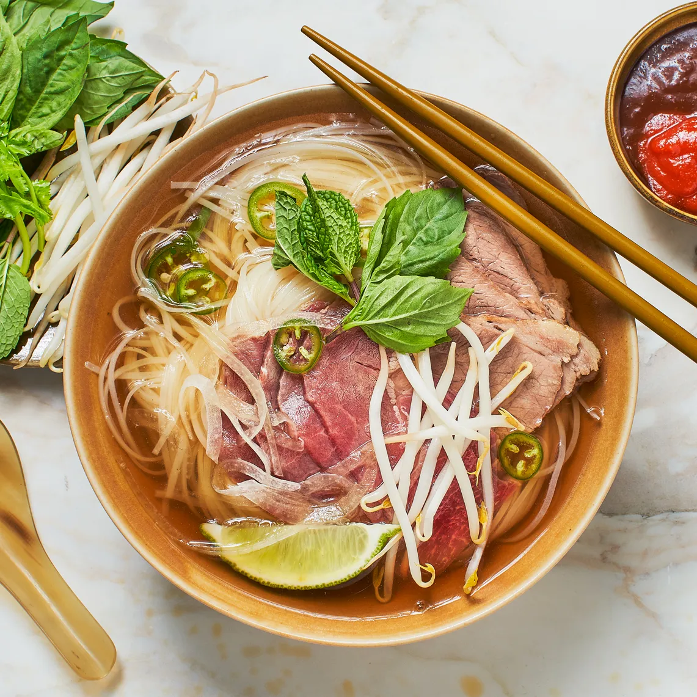

HOME MADE RECIPE
Healthy - Good - Food
Pho Recipe

One big pot of Pho
30 mins - Prep time
100 mins - Cook time
130 mins - total
4 servings
Ingredients
- 3 star anise pods
- 1 3" cinnamon stick
- 4 whole cloves
- 2 Tbsp. vegetable oil, plus more for noodles
- 2 medium onions, peeled, halved
- 1 2" piece ginger, scrubbed, sliced lengthwise ¼" thick
- 3 lb. 2"–3" sections mixed soup beef bones (oxtail, marrow, knuckles, and/or neck bone), rinsed under cold running water to remove blood and excess bits
- 1 lb. beef brisket or chuck, cut into 2" pieces
- 10 oz. dried thin Banh Pho rice noodles
Directions
-
- Set a 6-qt.
- Instant Pot to high sauté.
- Toast star anise, cinnamon stick, and cloves, stirring, until fragrant and
crackling slightly, about 2 minutes.
- Add 2 Tbsp. oil and work around to coat bottom of pot. Reduce heat to medium,
add onions, cut sides down, and ginger, and cook, undisturbed, until deep brown in spots, 5–7 minutes.
-
- Pour in 1 cup water, scraping up any browned bits with a wooden spoon, then add beef bones, brisket, fish sauce, sugar,
2½ tsp. Diamond Crystal or 1¼ tsp.
- Morton kosher salt, and another 6 cups water (or just up to your max fill line). Lock
lid and turn venting knob to sealing position.
- Cook on high pressure 1 hour (it will take about 20 minutes to come to pressure
l
before the cook time begins). Naturally release pressure 30 minutes.
-
- While the broth is cooking, place noodles in a large bowl and pour in cold water to cover.
- While the broth is cooking, place noodles in a large bowl and pour in cold water to cover. Let soak 30 minutes.
Drain noodles and rinse to remove excess starch.
- Drain noodles and rinse to remove excess starch. and While
the broth is cooking, place noodles in a large bowl and pour in cold water to cover. Let soak 30 minutes. Drain noodles and
rinse to remove excess starch.rinse to remove excess starch.
-
- Freeze beef eye of round until firm, 20–30 minutes.
- Thinly slice against the grain, then chill in refrigerator until ready to serve.